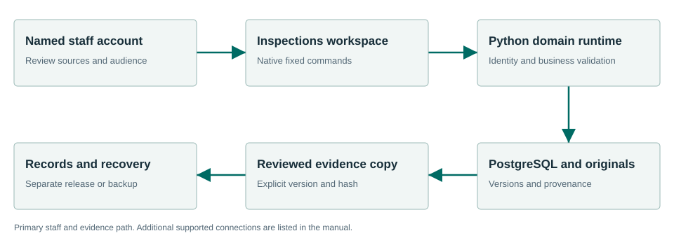

Preserve evidence and review every draft finding.
Inspections retains original evidence, supplied observations and optional configured photo/audio analysis, then supports reviewed case workpapers and a separate Records copy. Automatic output is a draft for inspector review.
What the workflow delivers
- Create the case. Enter the property/case context and inspector observations. Keep staff-only notes and identifiers in their intended fields. Save before moving away from the workspace.
- Retain originals. Add original supported files using the existing evidence control. Inspect the filename, size and retained hash. Preserve originals separately from any derivative draft.
- Choose supplied or automatic text. Use supplied photo observations and a supplied voice summary for deterministic work. If configured, Analyse originals calls the image-capable provider and bundled audio transcriber. Read unavailable/failed results as such; do not label supplied text automatic.
- Review the analysis and citations. Compare automatic wording to the original evidence. Correct errors, uncertainty and Code citations. A model output is neither an official finding nor a notice.
Connected evidence
Consumes cited Code and Core contracts; supplies a reviewed copy to Records. It does not imply an automatic permit-system or enforcement-system writeback.
Know the beta boundary
The bundled Whistle CPU engine executes raw-audio transcription. Automatic photo analysis requires explicit vision configuration; missing configuration reports unavailable. Synthetic execution proves that adapters run, not field recognition accuracy. No official citation/fine issuance, inspection scheduling or enforcement-system writeback is provided.
Where the evidence goes

Consumes cited Code and Core contracts; supplies a reviewed copy to Records. It does not imply an automatic permit-system or enforcement-system writeback.
Selected staff workflows passed.
The signed private candidate passed normal first-run and selected synthetic workflows in a fresh Windows Sandbox profile. This is not a claim that every screen, vendor, upgrade or city equipment configuration has been certified.
Read the exact acceptance and limits →Ready to evaluate?
Begin with the manual and the signed candidate linked above. Configure the chosen test site and have its staff review source applicability and run the existing workflows.